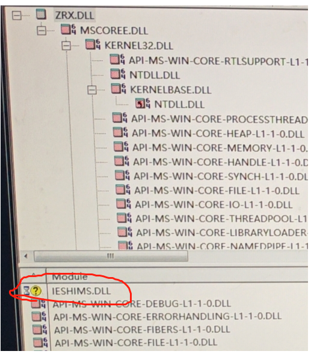

说明
在中望CAD中开发 ZRX程序会经常遇到一些问题，这个章节做个总结，以便开发者能遇到问题的时候在这个章节找到解放方法。
问题1：怎么用代码方式添加搜索路径
1. 如果需要在启动cad前就添加搜索路径，可以选择修改注册表项；
注册表路径：HKEY_CURRENT_USER\SOFTWARE\ZWSOFT\ZWCAD\2026\zh-CN\Profiles\Default\Config 注册表项：ZWCADSEARCHPATH
2. 软件运行时修改，可以选择通过com接口或修改环境变量“ZWCAD”或者“ZWCAD”来添加路径。
CString zcad;
zcedGetEnv(_T("ZWCAD"), zcad.GetBuffer(1024), 1024);
ZcString sOldSeachPath = zcad;
zcad.ReleaseBuffer();
ZcString sNewSeachPath = sOldSeachPath + _T("C:\\PROGRAM FILES\\TEST");
zcedSetEnv(_T("ZWCAD"), sNewSeachPath);
问题2：启动调试慢的问题
有不少客户反馈有时候启动调试ZWCAD软件启动非常耗费时间。
原因以及解决方法：
原因可能是因为启动调试的时候中望CAD加载了不少lisp模块的调试信息，可以尝试在中望cad安装包目录下找到zwlisp.zrx进行重命名。
另外可以先启动中望cad后appload命令加载zrx文件，然后在用“附加进程”的方式链接电脑里任务列表中启动的zwcad.exe进程。
问题3：ZRX插件加载失败
在很多情况下开发好的zrx会appload加载不了的情况，下面总结了几种方法来解决。
情况1：开发过程中就无法加载
可能的原因1：
需要检查编译程序集是否使用正确，如ZRX工程ZWCAD2017-2020版本需要用V140编译，ZWCAD2021-2026版本需要用V141编译。
可能原因2：
依赖库未添加到搜索路径，如zrx工程引用了第三方库，而第三方库不在搜索路径可能会导致加载失败。注：ZWCAD2024开始，zrx同目录下如有动态链接库也需要添加搜索路径。
情况2：有些电脑能加载有些电脑无法加载
可能原因1：
有些电脑完全级别较高，可能会锁定了该dll或者zrx，可以右击属性解锁。

可能原因2：
缺少系统动态链接库，避免方法如可以尝试用Release模式进行编译尽量减少非开发电脑缺少调试库。
另外可以用depends工具查看具体缺少什么系统动态依赖库。

可能原因3：
有些电脑权限较高，可以尝试用管理员权限启动中望CAD进行加载。
可能原因4：
中望标准版不支持加载zrx和dll需要购买专业版进行插件加载。
问题5：怎么用代码屏蔽系统命令
可以通过添加 ZcApDocManagerReactor 反应器，在命令开始执行时判断是否为需要屏蔽的系统命令，如果是则通过 veto() 中断当前命令。
class DocManReactor : public ZcApDocManagerReactor
{
public:
ZCRX_DECLARE_MEMBERS(DocManReactor);
DocManReactor() {}
~DocManReactor() {}
virtual void documentLockModeChanged(ZcApDocument*,
ZcAp::DocLockMode myPreviousMode,
ZcAp::DocLockMode myCurrentMode,
ZcAp::DocLockMode currentMode,
const ZTCHAR* pGlobalCmdName);
}
void DocManReactor::documentLockModeChanged(ZcApDocument *,
ZcAp::DocLockMode myPreviousMode,
ZcAp::DocLockMode myCurrentMode,
ZcAp::DocLockMode currentMode,
const ZTCHAR * pGlobalCmdName)
{
if (StrCmpW(pGlobalCmdName, L"ABOUT") == 0) {
veto();
}
}
问题6：打印程序遇到图纸打印结果偏移
在打印过程中开发者经常会遇到大部分打印出图的dwg是正常的，而有少数dwg打印空白或者偏移问题，应该如何解决？
方法1：
如果使用窗口范围打印，请检查传入的窗口坐标点是否有转换到DCS坐标系下。
zds_point pt, result;
struct resbuf fromrb, torb;
pt[X] = 1.0;
pt[Y] = 2.0;
pt[Z] = 3.0;
fromrb.restype = RTSHORT;
fromrb.resval.rint = 0; // WCS
torb.restype = RTSHORT;
torb.resval.rint = 2; // DCS
// disp == 0 indicates that pt is a point:
zcedTrans(pt, &fromrb, &torb, FALSE, result);
方法2：
将 Target 系统变量设置为 (0,0,0)。
问题7：非文档接口定义
如extern ZSoft::Boolean zcedPostCommand(const ZTCHAR* pmd); 在2025版本以上编译不过。
解决方法： 仅需包含udocapi.h头文件，无需修改接口声明
#include“udocapi.h”
extern ZSoft::Boolean zcedPostCommand(const ZTCHAR* pmd);
void test()
{
zcedPostCommand(L"about ");
}